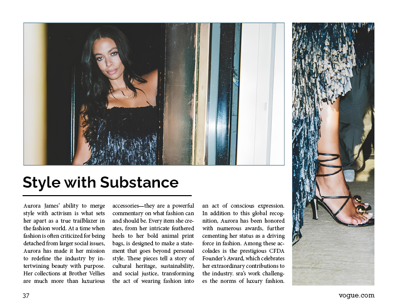

The title pageThe second page

The third pageThe fourth page
About the project
For my graphic design foundations assignment, I wanted to create a coffee
table book that would truly inspire and resonate with readers. I chose
Aurora James because her work goes beyond fashion—it's a statement about
sustainability, diversity and positive change. Her brand, Brother Vellies,
champions traditional craftsmanship while promoting ethical practices.
Aurora’s story is visually rich and compelling. From her vibrant designs
to her impactful activism, there was no shortage of material to work with.
The book showcases not just her work but the heart behind it, blending
photography, quotes, and my design sensibilities. She’s a reminder that
creativity can drive meaningful change, and I couldn’t think of a better
person to spotlight.